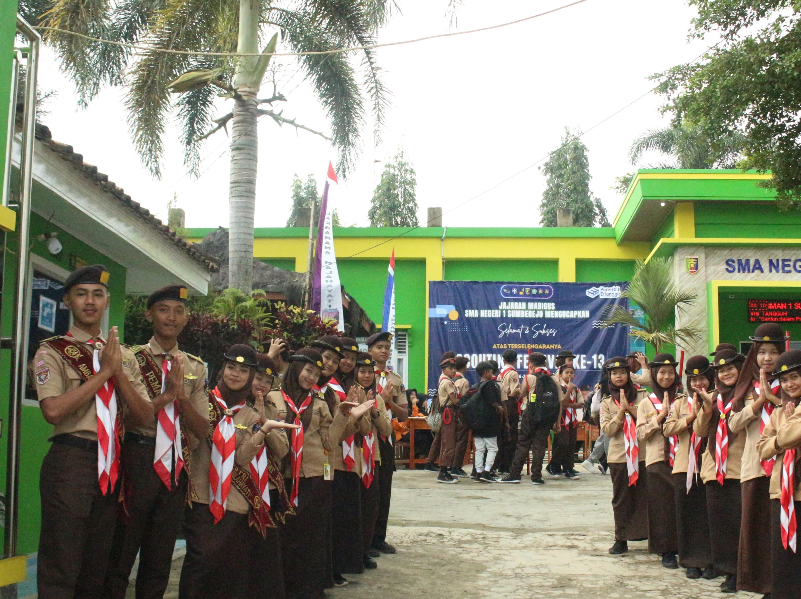
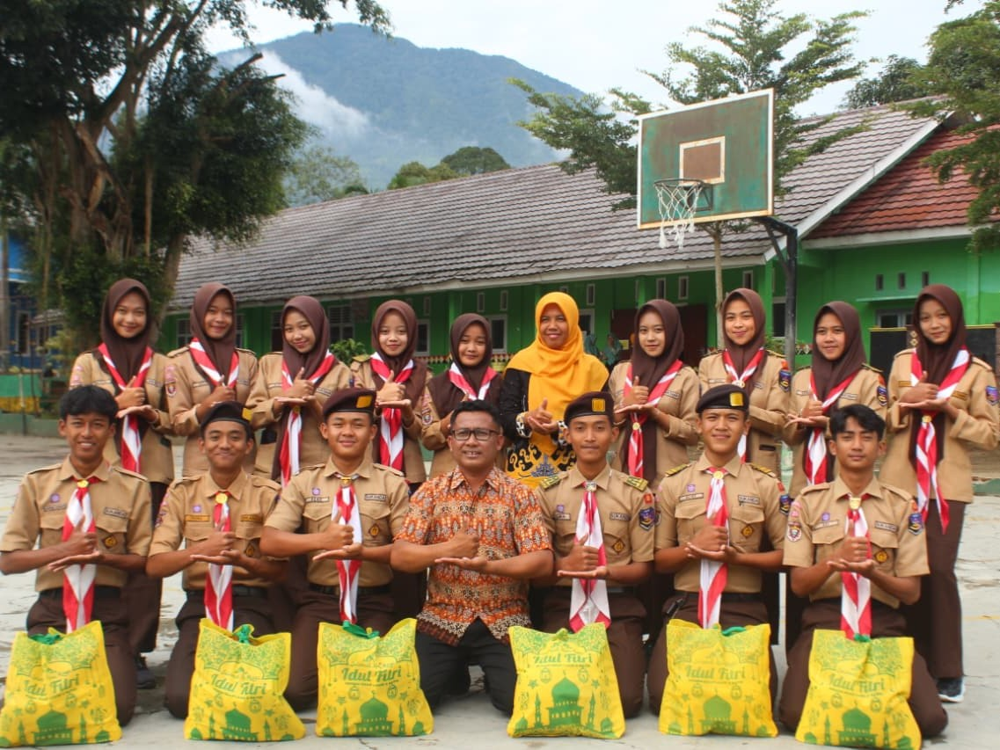
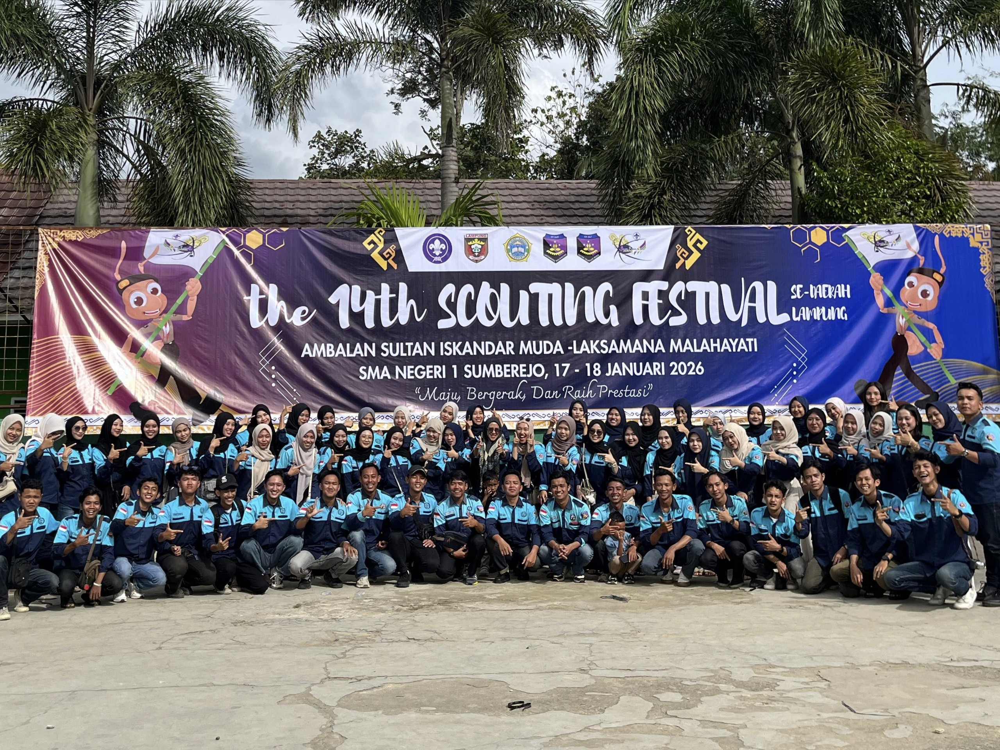
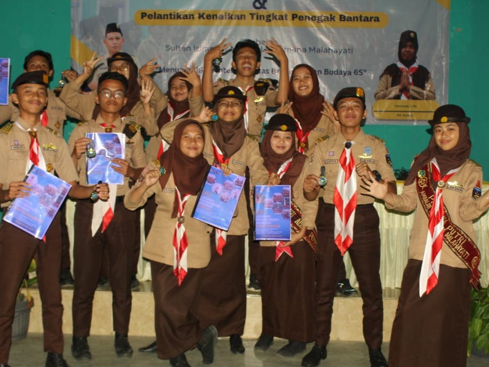
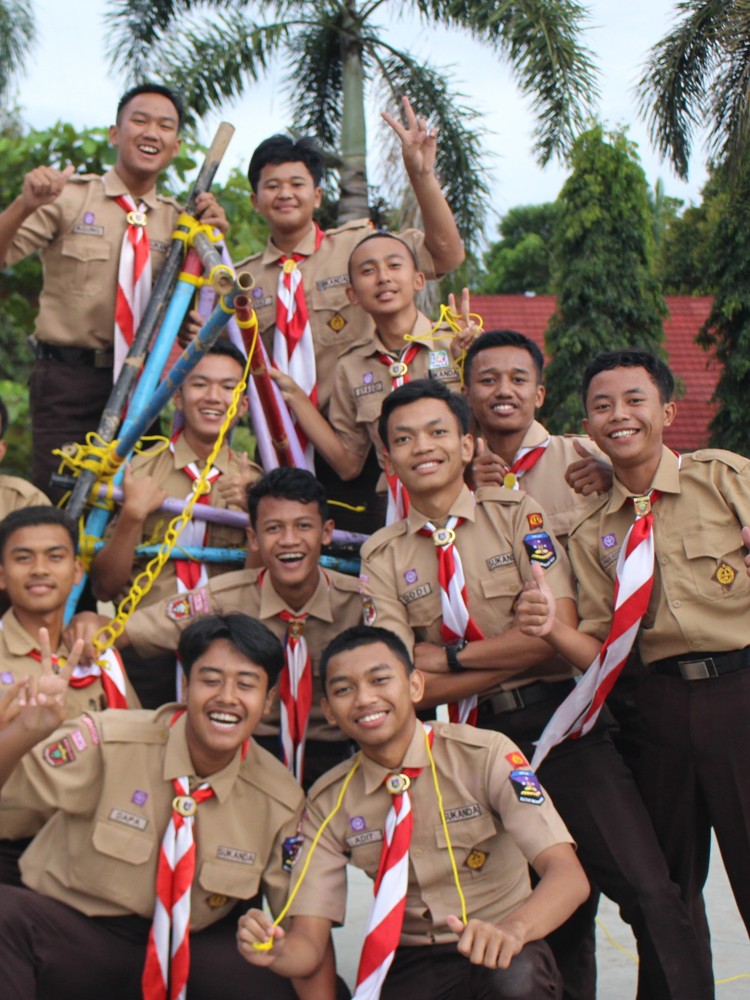

Galeri
Momen Berharga






Membangun jiwa
dalam semangat pramuka. Sultan Iskandar Muda & Laksamana Malahayati — warisan nilai kepahlawanan untuk generasi penerus bangsa.

Berdiri sejak 27 Agustus 2006, Ambalan Sukanda Laksma merupakan satuan pramuka penegak yang berpangkalan di SMAN 1 Sumberejo, Tanggamus, Lampung. Nama ambalan diambil dari dua tokoh pahlawan besar Aceh — Sultan Iskandar Muda dan Laksamana Malahayati.
Ambalan ini menjadi wadah pembinaan karakter, kepemimpinan, dan pengabdian masyarakat bagi para pramuka penegak putra-putri SMAN 1 Sumberejo.
Beragam program dirancang untuk membentuk karakter, meningkatkan keterampilan, dan mempererat persaudaraan antar anggota.
Latihan pramuka rutin setiap minggu meliputi keterampilan kepramukaan, tali-temali, P3K, dan pembinaan karakter anggota.
MingguanPSR (Perkemahan Songsong Ramadhan) dan kegiatan perkemahan lainnya untuk menguji ketangguhan dan mempererat solidaritas.
TahunanSukanda Laksma Peduli dan Berbagi — program sosial kemasyarakatan yang telah berjalan 11 edisi untuk membantu masyarakat sekitar.
SosialEvent pramuka tahunan berskala besar — kompetisi kepramukaan yang telah berjalan 14 edisi.
KompetisiKegiatan pertemuan pramuka galang yang menjadi ajang pembinaan dan pengembangan pramuka tingkat penggalang.
KompetisiMusyawarah Ambalan (MUSYAM) adalah forum tertinggi Pramuka Penegak untuk menentukan nahkoda.
Tahunan




Cipta: Jivi Anggesta · Musik: Wendi Erwin
Bersama kami, tempa karakter, bangun persaudaraan, dan ukir prestasi untuk bangsa dan negara.